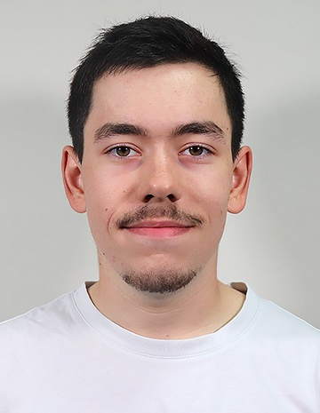

Gabriel Mancel
BUT Réseaux et Télécommunications

Bonjour, je suis étudiant en formation BUT Réseaux et Télécommunications (R&T) à l'IUT Grand Ouest Normandie.
Parcours : Cybersécurité (à partir de la 2ème année)
Centres d'intérêt professionnels :
- L'architecture de A à Z : Ce qui me plaît, c'est de partir de zéro, de brancher les câbles, de configurer les routeurs Cisco, et de voir qu'à la fin, deux machines à l'autre bout du bâtiment arrivent à communiquer.
- Le cœur d'Internet : Comprendre comment les données transitent physiquement (la fibre, les antennes) et configurer les équipements qui font tourner le web.
- L'automatisation des tâches : J'adore créer des petits scripts en Python ou en Bash pour automatiser les tâches répétitives et ennuyeuses de l'administration système.
- Faire communiquer les applications : Mettre les mains dans le code pour créer des petits outils ou faire discuter des API entre elles.
Finalité de ce site
Ce portfolio a pour objectif de documenter et d'analyser ma trajectoire de développement en mobilisant des traces issues de mes mises en situation professionnelle.
Il vous permettra de découvrir mes réalisations, l'évolution de mes compétences techniques et humaines, ainsi que mon recul critique sur ma formation.